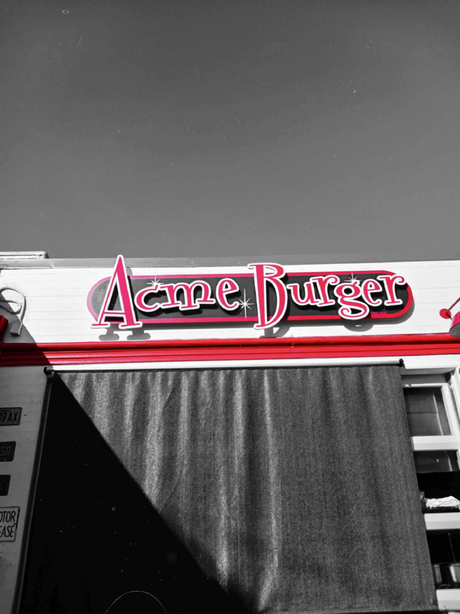
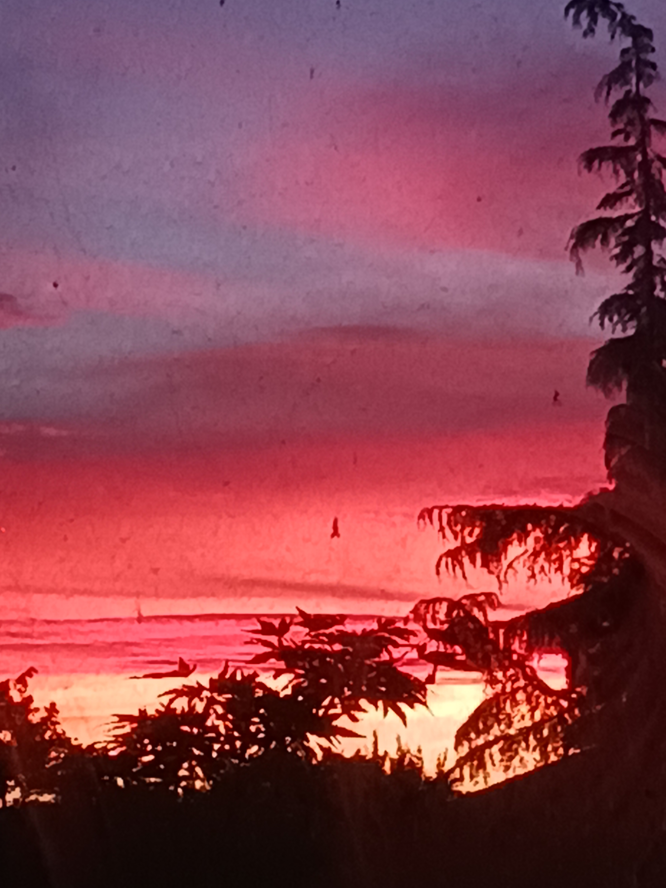

Current and In-Progress Music
I'm so sorry DEMO
"I'm so sorry" is a song that was created in the beautiful city of Petaluma, CA. The coast of Cali, the vibes of the city, and a little bit of ACME burger were the real inspirations for this song. Trying to capture emotions of making mistakes and the pain that they can cause is what this song is about.
Dissapear
"Dissapear" is the most recent song in development, and is still very rudamentary. The song was wrote to sympathize with those going through major life changes, tough times, and events that make us want to take a break.
Untitled Sunset Song
This song was written while in Davis, CA. It was inspired by looking at a red sunset through a dirty window. This song still has a lot to be worked out, but the beauty is there.
Old song 1
This song has been cooking for a long time. It's been an earworm with a catchy bass line since the day it was born. Still a lot of work to be done, but the perfect addition for an upcoming album.
Old song 2
Another banger that's been cooking for a while.